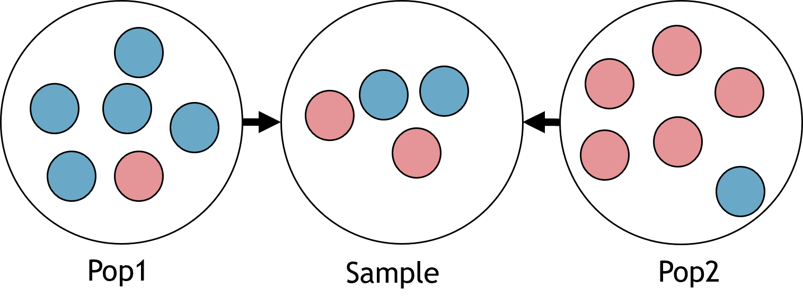

ln -sf ../Data
mkdir -p Results/GWAS4Quality Control: Relatedness & Population Stratification
Important notes for this notebook
As we have already mentioned, quality control (QC) analyses are crucial to ensure the reliability and validity of the results. In this section, we will explore confounding factors in GWAS that can lead to spurious associations if not properly controlled, including:
- Relatedness
- Population Stratification/Structure
Learning outcomes
- Discuss confounding factors that lead to spurious associations
- Detect related individuals
- Identify population substructure
- Correct for population stratification
How to make this notebook work
In this notebook, we will both use R and bash command line programming languages. Remember to change the kernel whenever you transition from one language to the other (Kernel --> Change Kernel) indicated by the languages’ images. * We will first run Bash commands.
 Choose the Bash kernel
Choose the Bash kernel
A. Relatedness
Relatedness refers to the presence of genetically related individuals in a study sample, which can introduce confounding factors into association analyses. Since most statistical methods assume that samples are independent, including related individuals, like siblings, violates this assumption. Addressing relatedness is crucial as a quality control step to ensure that genomes in the dataset are no more similar than expected for unrelated individuals. This process is essential to preserve the validity of the study’s findings.
While all humans share some genetic relatedness, the degree of relatedness varies among individuals. In genome-wide association studies (GWAS), these variations must be accounted for to avoid biasing the statistical associations between genotypes and phenotypes. Cryptic relatedness (genetic relatedness of individuals not expected to be in a family relationship) can interfere with the association analysis (Voight and Pritchard 2005).
In a family-based study (e.g., parent-offspring), you do not need to remove related pairs, but the statistical analysis should account for family relatedness. However, for a population-based study, we suggest using the KING estimator (Manichaikul et al. 2010) with a threshold of 0.2.
Differently from the IBD estimator (called pi_hat \(\hat{\pi}\)), which assumes that individuals come from homogeneous population, KING derives a kinship estimate for a pair of individuals without reference to the population allele frequencies. Instead, it gets the relatedness information from the difference between the counts of loci where both individuals are heterozygotes and counts of loci where they are different homozygotes, normalized by the sum of the heterozygous loci of the individuals. This makes KING robust to population structure and useful to check genotyping quality.
Thus, values for KING are
- 0.25 for parent-child or full siblings: they share exactly 50% of their alleles by descent (IBD). For full siblings it can vary slightly (e.g. recombination events).
- 0.125 for half siblings: they have 25% IBD (one parent is common).
- 0.065 for 1st cousins: IBD is 12.5% since they share one set of grandparents and not parents.
KING values need to be multiplied by 2 to match the corresponding IBD probability

We use ln -sf to link the data folder and create a directory for output files.
Analysis with PLINK
We will use the set of independent SNPs (generated in the previous section) and the --make-king-table option in PLINK2 for our analysis, so that we generate pairwise KING estimators. Note that we use version 2 of PLINK because this one has implemented the KING estimator.
The HapMap dataset is known to contain parent-offspring relationships. We will check the KING estimator values and exclude all individuals above a chosen threshold (to remove at least related individuals).
plink2 --bfile Results/GWAS3/HapMap_3_r3_7 \
--extract Results/GWAS3/indepSNP.prune.in --make-king-table \
--out Results/GWAS4/KINGPLINK v2.00a5.12LM 64-bit Intel (25 Jun 2024) www.cog-genomics.org/plink/2.0/
(C) 2005-2024 Shaun Purcell, Christopher Chang GNU General Public License v3
Logging to Results/GWAS4/KING.log.
Options in effect:
--bfile Results/GWAS3/HapMap_3_r3_7
--extract Results/GWAS3/indepSNP.prune.in
--make-king-table
--out Results/GWAS4/KING
Start time: Mon Mar 17 13:04:14 2025
385567 MiB RAM detected, ~349644 available; reserving 192783 MiB for main
workspace.
Using up to 64 threads (change this with --threads).
161 samples (84 females, 77 males; 110 founders) loaded from
Results/GWAS3/HapMap_3_r3_7.fam.
1073788 variants loaded from Results/GWAS3/HapMap_3_r3_7.bim.
1 binary phenotype loaded (55 cases, 55 controls).
--extract: 107199 variants remaining.
107199 variants remaining after main filters.
--make-king-table pass 1/1: Scanning for rare variants... done.
0 variants handled by initial scan (107199 remaining).
--make-king-table pass 1/1: Writing... done.
--make-king-table: 107199 variants processed.
Results written to Results/GWAS4/KING.kin0 .
End time: Mon Mar 17 13:04:15 2025The table from PLINK2 contains various things:
FID1: Family ID of the first individual.IID1: Individual ID of the first individual.FID2: Family ID of the second individual.IID2: Individual ID of the second individual.NSNP: The number of SNPs used to calculate the kinship between the two individuals.HETHET: The number of heterozygous sites used in the kinship calculation (often useful for checking genotyping quality).IBS0: The number of identical-by-state (IBS) 0 SNPs, which are variants where the two individuals do not share the same allele.KINSHIP: The kinship coefficient (or pihat) between the two individuals, which is the proportion of alleles shared by descent.
Stop - Read - Solve
- What assumption in association studies is violated when individuals are related?
- How would you recognize if the same sample is duplicated in your dataset?
- Are there closely related individuals? How many individuals show close relatedness (
KING > 0.2)? - What relationships are found by PLINK?
# Write your code here (add more cells if needed)
Solution
- If you have related individuals, you will lose the independence of individuals at each SNP. This is a problem because many models used in GWAS analysis do not include handling family relationships.
- Calculating the KING coefficient and looking for a value close to 0.5.
- We will look for unique values in column 8 (
KINSHIP), rounding to two decimals - We will examine
KINSHIPvalues in column 8.
Let’s print the first few rows of KING.kin0 and then, the unique relatioship categories in the file:
cat Results/GWAS4/KING.kin0 | head -5#FID1 IID1 FID2 IID2 NSNP HETHET IBS0 KINSHIP
1377 NA11891 1328 NA06989 105745 0.141359 0.0697905 0.000417305
1349 NA11843 1328 NA06989 106887 0.140803 0.0701676 0.000194882
1349 NA11843 1377 NA11891 105915 0.140452 0.0696502 -6.82892e-05
1330 NA12341 1328 NA06989 106633 0.144027 0.0685248 0.00797672Now, let’s calculate how many samples are in a pair with KING KINSHIP parameter (column 8) larger than 0.06, 0.12, 0.2 (to account for small variations in relevant thresholds). Note that the file contains one individual of a pair, so some samples might be shown many times. Thus we make those samples unique.
awk '{ if ($8 > 0.06) print $2}' Results/GWAS4/KING.kin0 | sort | uniq | wc -l77awk '{ if ($8 > 0.12) print $2}' Results/GWAS4/KING.kin0 | sort | uniq | wc -l77awk '{ if ($8 > 0.2) print $2}' Results/GWAS4/KING.kin0 | sort | uniq | wc -l77There are 76 individuals with KINSHIP larger than all thresholds. So we might have 76 half siblings, cousins and siblings mixed in the data. There are potentially some family ties in this data!
 Switch to the R-GWAS kernel.
Switch to the R-GWAS kernel.
Stop - Read - Solve
Write some R code to calculate the summary of the distribution of KINSHIP values. What do you observe?
hint: use the hist() command.
# Write your code here
Solution
Many parent-offspring (PO) relationships have a parameter close to 0.5, and the maximum value for unrelated (UN) individuals is also unexpectedly high relatedness.
We read in the matrix (Note that the header starts with # in the file KING.kin0, so we need comment.char = '|' to avoid the header being excluded as a comment)
# Generate a plot to assess the type of relationship.
suppressMessages(suppressWarnings(library(ggplot2)))
options(repr.plot.width = 9, repr.plot.height = 4)
# Read data into R
relatedness <- read.table("Results/GWAS4/KING.kin0", header=TRUE, comment.char = '|')
head(relatedness)| X.FID1 | IID1 | FID2 | IID2 | NSNP | HETHET | IBS0 | KINSHIP | |
|---|---|---|---|---|---|---|---|---|
| <int> | <chr> | <int> | <chr> | <int> | <dbl> | <dbl> | <dbl> | |
| 1 | 1377 | NA11891 | 1328 | NA06989 | 105745 | 0.141359 | 0.0697905 | 4.17305e-04 |
| 2 | 1349 | NA11843 | 1328 | NA06989 | 106887 | 0.140803 | 0.0701676 | 1.94882e-04 |
| 3 | 1349 | NA11843 | 1377 | NA11891 | 105915 | 0.140452 | 0.0696502 | -6.82892e-05 |
| 4 | 1330 | NA12341 | 1328 | NA06989 | 106633 | 0.144027 | 0.0685248 | 7.97672e-03 |
| 5 | 1330 | NA12341 | 1377 | NA11891 | 105660 | 0.143252 | 0.0681810 | 5.60575e-03 |
| 6 | 1330 | NA12341 | 1349 | NA11843 | 106806 | 0.143569 | 0.0702957 | 1.79513e-03 |
Now we look at how many pairs have specific relatedness values. You can see there are around 100 pairs of cousins/half siblings/siblings. Those correspond to the 76 unique samples observed before.
hist.king <- ggplot(relatedness, aes(x=relatedness[,8])) +
geom_histogram(binwidth = 0.02, col = "black", fill="tomato") +
labs(title = "Histogram of relatedness (KING)") +
xlab("KING kinship") +
ylab("Log Frequency") +
theme_bw() +
scale_y_log10() +
theme(axis.title=element_text(size=14),
axis.text=element_text(size=13),
plot.title=element_text(size=15))
#Extract coordinates of the plot
bin_data <- ggplot_build(hist.king)$data[[1]]
#Adding text labels to each bar,
#accounting for log scale
hist.king +
geom_text(data = bin_data,
aes(x = xmin + (xmax - xmin) / 2,
y = log10(count+1), # Apply log10
label = count),
vjust = -5, #Vertical adjustment of text
size = 4,
color = "black")Warning message in scale_y_log10():
“log-10 transformation introduced infinite values.”
Warning message in scale_y_log10():
“log-10 transformation introduced infinite values.”
Warning message in scale_y_log10():
“log-10 transformation introduced infinite values.”
Warning message:
“Removed 6 rows containing missing values or values outside the scale range
(`geom_bar()`).”
We can also plot the number of SNPs used to calculate relatedness VS the KING relatedness itself. Pairs with very low number of SNPs and anomalous KING estimator might simply contain badly genotyped sample(s). This is not at all our case.
# Relatedness plot
plot.relatedness <- ggplot(relatedness) +
geom_point(aes(x=NSNP, y=KINSHIP), size=5, alpha=.25) +
ylim(-.1,.4) +
labs(x = "Number of SNPs used", y = "KING kinship", title = "Check for genotyping quality") +
theme_bw() +
theme(axis.title=element_text(size=14),
axis.text=element_text(size=13),
legend.text= element_text(size=13),
legend.title=element_text(size=14),
plot.title=element_text(size=15))
show(plot.relatedness)
Stop - Read - Solve
Use PLINK options to filter out related individuals, using a relatedness threshold of 0.1.
First of all you need to create a file with the IDs of the samples to remove. You can use the command
awkas we did before in this exercise.Afterwards you need PLINK with the option
--removeto use the file with IDs. Name the output--out Results/GWAS4/king_exercise.
 Switch to the Bash kernel.
Switch to the Bash kernel.
# Write your code here (PLINK command)
Solution
We use awk to print IDs to remove and then the option --remove of PLINK.
 We print out all family and sample IDs for which the column KINSHIP (column 8) is >0.1. Note we print both samples in the pair with high relatedness, using the
We print out all family and sample IDs for which the column KINSHIP (column 8) is >0.1. Note we print both samples in the pair with high relatedness, using the awk command twice.
awk '{ if ($8 > 0.1) print $1, $2 }' Results/GWAS4/KING.kin0 > Results/GWAS4/filter_king.txtNow each sample is identified uniquely ba family and sample ID. Some samples are repeated more than once because we have selected the first sample in related pairs, so same samples appear more than once. We use the option --remove to produce a new set of plink files. We will be warned about sample repetitions because we have been having some duplicates from the KINSHIP pairs
plink --bfile Results/GWAS3/HapMap_3_r3_7 --make-bed --remove Results/GWAS4/filter_king.txt --out Results/GWAS4/king_exercisePLINK v1.90b6.21 64-bit (19 Oct 2020) www.cog-genomics.org/plink/1.9/
(C) 2005-2020 Shaun Purcell, Christopher Chang GNU General Public License v3
Logging to Results/GWAS4/king_exercise.log.
Options in effect:
--bfile Results/GWAS3/HapMap_3_r3_7
--make-bed
--out Results/GWAS4/king_exercise
--remove Results/GWAS4/filter_king.txt
385567 MB RAM detected; reserving 192783 MB for main workspace.
1073788 variants loaded from .bim file.
161 people (77 males, 84 females) loaded from .fam.
110 phenotype values loaded from .fam.
--remove: 85 people remaining.
Warning: At least 17 duplicate IDs in --remove file.
Using 1 thread (no multithreaded calculations invoked).
Before main variant filters, 67 founders and 18 nonfounders present.
Calculating allele frequencies... done.
Total genotyping rate in remaining samples is 0.997765.
1073788 variants and 85 people pass filters and QC.
Among remaining phenotypes, 34 are cases and 33 are controls. (18 phenotypes
are missing.)
--make-bed to Results/GWAS4/king_exercise.bed + Results/GWAS4/king_exercise.bim
+ Results/GWAS4/king_exercise.fam ... done.We have gone from 161 to 85 samples, removing 76 related ones.
 Switch to the Bash kernel.
Switch to the Bash kernel.
So far, you’ve learned how to filter individuals using KING kinship thresholds. Now, we’ll demonstrate that most of the relatedness was due to parent-offspring relationships. We will achieve this by using the --filter-founders option to create a new filtered dataset that includes only the founders (individuals without listed parents in the data). This generates .bed, .bim, and .fam files, which are then used to create a .kin0 file containing relatedness values. Note again we use plink2 to create the KING matrix.
plink --bfile Results/GWAS3/HapMap_3_r3_7 --filter-founders --make-bed --out Results/GWAS4/HapMap_3_r3_8 --silent
plink2 --bfile Results/GWAS4/HapMap_3_r3_8 --extract Results/GWAS3/indepSNP.prune.in --make-king-table --out Results/GWAS4/KING_foundersPLINK v2.00a5.12LM 64-bit Intel (25 Jun 2024) www.cog-genomics.org/plink/2.0/
(C) 2005-2024 Shaun Purcell, Christopher Chang GNU General Public License v3
Logging to Results/GWAS4/KING_founders.log.
Options in effect:
--bfile Results/GWAS4/HapMap_3_r3_8
--extract Results/GWAS3/indepSNP.prune.in
--make-king-table
--out Results/GWAS4/KING_founders
Start time: Tue Mar 18 12:52:28 2025
385567 MiB RAM detected, ~340647 available; reserving 192783 MiB for main
workspace.
Using up to 64 threads (change this with --threads).
110 samples (55 females, 55 males; 110 founders) loaded from
Results/GWAS4/HapMap_3_r3_8.fam.
1073788 variants loaded from Results/GWAS4/HapMap_3_r3_8.bim.
1 binary phenotype loaded (55 cases, 55 controls).
--extract: 107199 variants remaining.
107199 variants remaining after main filters.
--make-king-table pass 1/1: Scanning for rare variants... done.
0 variants handled by initial scan (107199 remaining).
--make-king-table pass 1/1: Writing... done.
--make-king-table: 107199 variants processed.
Results written to Results/GWAS4/KING_founders.kin0 .
End time: Tue Mar 18 12:52:29 2025 Switch to the R kernel.
Switch to the R kernel.
Let’s plot the results from the KING_founders.kin0 file. We can see how there is only 1 pair with high kinship amongst the founders.
suppressMessages(suppressWarnings(library(ggplot2)))
relatedness <- read.table("Results/GWAS4/KING_founders.kin0", header=TRUE, comment.char = '|')
hist.king <- ggplot(relatedness, aes(x=relatedness[,8])) +
geom_histogram(binwidth = 0.02, col = "black", fill="tomato") +
labs(title = "Histogram of relatedness (KING) in founders-only data") +
xlab("KING kinship") +
ylab("Log Frequency") +
theme_bw() +
scale_y_log10() +
theme(axis.title=element_text(size=14),
axis.text=element_text(size=13),
plot.title=element_text(size=15))
#Extract coordinates of the plot
bin_data <- ggplot_build(hist.king)$data[[1]]
#Adding text labels to each bar,
#accounting for log scale
hist.king +
geom_text(data = bin_data,
aes(x = xmin + (xmax - xmin) / 2,
y = log10(count+1), # Apply log10
label = count),
vjust = -10, #Vertical adjustment of text
size = 4,
color = "black")Warning message in scale_y_log10():
“log-10 transformation introduced infinite values.”
Warning message in scale_y_log10():
“log-10 transformation introduced infinite values.”
Warning message in scale_y_log10():
“log-10 transformation introduced infinite values.”
Warning message:
“Removed 9 rows containing missing values or values outside the scale range
(`geom_bar()`).”
Stop - Read - Solve
- 1. Do you observe anything unexpected in the plot?
- 2. Can you identify the IIDs of the sample pair? Hint: filter for KINSHIP values.
- 3. Based on the KINSHIP, what is the most likely relationship between the pair?
- 4. What would you do about it? Hint: remove one or both in the pair?
# Write your answer here# R code here
Solution
- 1. The file
KING_founders.kin0shows that, after excluding all non-founders, one individual pair removed in the exercise remains in the HapMap data. - 2. Below, we can look at the individual from the table by setting KINSHIP > 0.2. Even if labeled as unrelated, it has high relatedness. The IIDs of the pair are NA07045 and NA12813.
relatedness[relatedness$KINSHIP > 0.2,]| X.FID1 | IID1 | FID2 | IID2 | NSNP | HETHET | IBS0 | KINSHIP | |
|---|---|---|---|---|---|---|---|---|
| <int> | <chr> | <int> | <chr> | <int> | <dbl> | <dbl> | <dbl> | |
| 2729 | 1454 | NA12813 | 13291 | NA07045 | 106716 | 0.210015 | 0.0181322 | 0.247089 |
- 3. This remaining individual is likely to be related with sibling relationship, even though they were not given the same family identity (FID) in the HapMap data.
- 4. We don’t need to remove both individuals from the dataset (IID1=NA07045; IID2=NA12813). It’s enough to remove just one, and the individual with the highest missing rate (lowest quality) could be chosen. Let’s calculate the missing rates using PLINK.
 Switch to the Bash kernel.
Switch to the Bash kernel.
plink --bfile Results/GWAS4/HapMap_3_r3_8 --missing --out Results/GWAS4/HapMap_3_r3_8 --silentThen, find the two individuals from the output file using grep and sorting descendingly by missing rate (EZ, column 6)
# Let's look at the output
cat Results/GWAS4/HapMap_3_r3_8.imiss | grep -E 'NA07045|NA12813' | sort -k6,6nr 13291 NA07045 N 2560 1073788 0.002384
1454 NA12813 N 1956 1073788 0.001822NA07045 is the individual to be removed. Once this is removed, their offspring can still be used in analyses that don’t involve trios, such as family-related studies.
Stop - Read - Solve
- Plot the distribution of missing rates from
HapMap_3_r3_8. What is the value forNA07045? - Remove
NA07045from the PLINK files
Hint:
- Use the
.imissfile to plot a histogram of the missing scores from the fileHapMap_3_r3_8.imissinR(check previous notebooks for help). Is the score ofNA07045amongst the higher/lower ones? You can add a vertical line in the histogram representing the value forNA07045usinggeom_vline. - Create a file with the sample ID to remove and use the
--removeoption in PLINK.
 Switch to the R kernel.
Switch to the R kernel.
# Write your code here
Solution
We can extract the column from the file and observe in the histogram that the individual NA07045 has a missing rate closer which is in the bulk of other samples.
suppressMessages(suppressWarnings(library(ggplot2)))
options(repr.plot.width = 9, repr.plot.height = 4)
# Read data into R
smiss <- read.table("Results/GWAS4/HapMap_3_r3_8.smiss", header=T, comment.char = '|')
head(smiss)
hist.relatedness <- ggplot(data=smiss, aes(F_MISS)) +
geom_histogram(col = "black", fill = "tomato") +
geom_vline(xintercept = 0.002384, color = "red", linetype = "dashed", linewidth = 1) +
labs(title = "Histogram of missing rates") +
xlab("Missing rate") +
ylab("Frequency") +
theme_bw() +
theme(axis.title=element_text(size=14), axis.text=element_text(size=13),plot.title=element_text(size=15))
show(hist.relatedness)| X.FID | IID | PHENO1 | MISSING_CT | OBS_CT | F_MISS | |
|---|---|---|---|---|---|---|
| <int> | <chr> | <chr> | <int> | <int> | <dbl> | |
| 1 | 1328 | NA06989 | N | 2202 | 1073788 | 0.002050680 |
| 2 | 1377 | NA11891 | N | 13607 | 1073788 | 0.012672000 |
| 3 | 1349 | NA11843 | N | 821 | 1073788 | 0.000764583 |
| 4 | 1330 | NA12341 | N | 3708 | 1073788 | 0.003453200 |
| 5 | 1328 | NA06984 | N | 6484 | 1073788 | 0.006038440 |
| 6 | 1418 | NA12275 | N | 2740 | 1073788 | 0.002551710 |
`stat_bin()` using `bins = 30`. Pick better value with `binwidth`.
 Switch to the Bash kernel.
Switch to the Bash kernel.
To remove the individual from the data, we create a file containing its number and ID, and provide it to PLINK with the option --remove
echo "13291 NA07045" > Results/GWAS4/id_remove.txt# Delete the individuals with the lowest call rate in 'related' pairs with a pihat > 0.2
plink --bfile Results/GWAS4/HapMap_3_r3_8 --remove Results/GWAS4/id_remove.txt --make-bed --out Results/GWAS4/HapMap_3_r3_9 --silentB. Population Stratification
Population stratification presents a significant source of systematic bias in GWAS, arising when subpopulations exhibit systematic differences in allele frequencies. Research indicates that even subtle degrees of population stratification can exist within a single ethnic population (Abdellaoui et al. 2013). Thus, testing and controlling for the presence of population stratification is an essential QC step.
The population structure (or in other words, the ancestral relationship of the populations) is a so-called confounding factor. This means that it affects both the dependent and independent variables, as shown in the figure below, where both the genotype and traits are influenced by population structure (e.g., the distribution of north and south European individuals in the PCA space and the height of those individuals).
 {fig-align=“center”, width=400px}
{fig-align=“center”, width=400px}
Why is a bias introduced? Population structure can influence allele frequencies and produce false positives/negatives when doing association testing. Graphically, consider the example in the figure below. Case and control for population 1 and 2 have specific MAFs. Removing the barrier between populations will change MAFs drastically for the two confitions.
 {fig-align=“center”, width=400px}
{fig-align=“center”, width=400px}
The same problem arises in population studies without Case-control categories. Imagine having a population of randomly sampled individuals, each from a different ethnicity (the blue and red minor alleles in the example below). The final group of individuals will have a different proportion of MAFs depending on the sampling of various ethnicities.
{fig-align=“center”, width=400px}
There are several methods to correct for population stratification (Price et al. 2010, price_principal_2006). Here, we illustrate a method integrated into PLINK: the multidimensional scaling (MDS) approach. MDS calculates the genome-wide average proportion of shared alleles between any pair of individuals to generate quantitative indices (components) of the genetic variation for each individual. The individual component scores can be visualized to identify groups of genetically similar individuals. For instance, in a genetic study including subjects from Asia and Europe, MDS analysis would reveal that Asians are genetically more similar to each other than to Europeans and Africans. The figure below shows another example of MDS using HapMap, Genome diversity project, and authors’ data:
To investigate which individuals the generated component scores deviate from in the target population, plotting the scores of the dataset under investigation and a population of known ethnic structure (e.g., HapMap/1KG data) is helpful: this step is called anchoring (Rietveld et al. 2013). This enables the researcher to obtain ethnic information on their data and to determine possible ethnic outliers. For example, in the figure above, if TSI (Tuscans from Italy) is the anchor population, one can hypothesize that the yellow dots might be ethnically similar (as in the example).
Outliers identified based on MDS analysis should be excluded from further analyses. Following their removal, a new MDS analysis must be conducted, and its primary components are utilized as covariates in association tests to correct for any residual population stratification within the population. The number of components to include depends on the population structure and sample size (usually 10-20).
The MDS from Cortellari et al. (2021) shows a distinct goat population outlier. The second axis is dominated by this outlier, obscuring structure in the other populations. Removing the outlier reveals a clearer structure among the remaining populations.


Stop - Read - Solve
It is also possible to correct for relatedness (family structure). Should we also do it?
Analysis
We aim to merge the HapMap and 1000GP datasets, using 1000GP Phase I as the anchor for HapMap. Our goal is to check if we can identify the ethnicity of the HapMap data based on the ethnicities in the 1000GP dataset. There are several steps to ensure compatibility between the datasets, so stay with us!
1000GP data download
Here are some commands to download and convert the 1000GP data for GWAS analysis. You don’t need to run them, as we’ve already processed the data.
- 1000 Genomes Project - Phase I: genetic information for 629 individuals from various ethnic groups (>60GB). Phase III is now available, and we recommend using it for research purposes.
wget ftp://ftp-trace.ncbi.nih.gov/1000genomes/ftp/release/20100804/ALL.2of4intersection.20100804.genotypes.vcf.gzThe data was converted from the vcf file (Variant Call Format) to plink format (bim, fam, bed):
plink2 --vcf ALL.2of4intersection.20100804.genotypes.vcf.gz --make-bed --out ALL.2of4intersection.20100804.genotypes
Note
The 1000 Genomes data downloaded above is rather large so the commands are not executable and are shown for reference only. To save time, we’ve provided the .bed, .bimand .fam files in the Data folder.
Let’s unzip the files and see how many samples we have.
unzip -o Data/1000genomes.zip -d Results/GWAS4
# count lines in fam
wc -l Results/GWAS4/1000genomes.genotypesA.famArchive: Data/1000genomes.zip
inflating: Results/GWAS4/1000genomes.genotypesA.bed
inflating: Results/GWAS4/1000genomes.genotypesA.bim
inflating: Results/GWAS4/1000genomes.genotypesA.fam
inflating: Results/GWAS4/1000genomes.genotypesA.log
inflating: Results/GWAS4/1000genomes.genotypesA.nosex
37 Results/GWAS4/1000genomes.genotypesA.famWe have a subset of 37 individuals. Now, let’s explore the bim file.
cat Results/GWAS4/1000genomes.genotypesA.bim | head -51 rs112750067 0 10327 C T
1 . 0 11508 A G
1 . 0 12783 G A
1 . 0 13116 G T
1 . 0 14933 A GOne should note that the file 1000genomes.genotypes.bim contains SNPs without an rs-identifier (or Reference SNP cluster ID). The missing rs-identifiers (noted as .) are not a problem for this tutorial. However, for good practice, we will assign unique identifiers to the SNPs (using available information):
plink --bfile Results/GWAS4/1000genomes.genotypesA --set-missing-var-ids @:#[b37]\$1,\$2 --make-bed --out Results/GWAS4/1000genomes.genotypesA_no_missing_IDs --silentNow, let’s visualize the data to check the SNP names assigned. These are derived from the format @:#[b37]\$1,\$2 in the command above, which PLINK interprets as chromosome:locus[b37]Allele1,Allele2:
# Show changes on the bim file
cat Results/GWAS4/1000genomes.genotypesA_no_missing_IDs.bim | head -51 rs112750067 0 10327 C T
1 1:11508[b37]A,G 0 11508 A G
1 1:12783[b37]A,G 0 12783 G A
1 1:13116[b37]G,T 0 13116 G T
1 1:14933[b37]A,G 0 14933 A GPretty neat, right?
QC on 1000GP data
As we covered in the GWAS3 notebook, it’s important to account for missingness, sex discrepancies, and minor allele frequency. We’ll apply standard QC thresholds to the 1000 GP data before merging it with HapMap data.
plink --bfile Results/GWAS4/1000genomes.genotypesA_no_missing_IDs --geno 0.02 \
--allow-no-sex --make-bed --out Results/GWAS4/1kG_MDS --silent
plink --bfile Results/GWAS4/1kG_MDS --mind 0.02 \
--allow-no-sex --make-bed --out Results/GWAS4/1kG_MDS2 --silent
plink --bfile Results/GWAS4/1kG_MDS2 --maf 0.05 \
--allow-no-sex --make-bed --out Results/GWAS4/1kG_MDS3 --silentSNPs matching between datasets
N.B: Ensure that the datasets you want to merge share the same genomic build! Otherwise, you’ll need to include a liftover step.
We want to only consider SNPs that both datasets have in common. First, extract SNP names from the HapMap data and filter the 1000GP data to include only matching SNPs.
#Print out SNPs from the HapMap data
awk '{print$2}' Results/GWAS4/HapMap_3_r3_9.bim > Results/GWAS4/HapMap_SNPs.txt
#Extract the HapMap SNPs from the 1000GP data
plink --bfile Results/GWAS4/1kG_MDS3 --extract Results/GWAS4/HapMap_SNPs.txt \
--make-bed --out Results/GWAS4/1kG_MDS4PLINK v1.90b6.21 64-bit (19 Oct 2020) www.cog-genomics.org/plink/1.9/
(C) 2005-2020 Shaun Purcell, Christopher Chang GNU General Public License v3
Logging to Results/GWAS4/1kG_MDS4.log.
Options in effect:
--bfile Results/GWAS4/1kG_MDS3
--extract Results/GWAS4/HapMap_SNPs.txt
--make-bed
--out Results/GWAS4/1kG_MDS4
385567 MB RAM detected; reserving 192783 MB for main workspace.
2232052 variants loaded from .bim file.
37 people (0 males, 0 females, 37 ambiguous) loaded from .fam.
Ambiguous sex IDs written to Results/GWAS4/1kG_MDS4.nosex .
--extract: 376560 variants remaining.
Using 1 thread (no multithreaded calculations invoked).
Before main variant filters, 37 founders and 0 nonfounders present.
Calculating allele frequencies... done.
376560 variants and 37 people pass filters and QC.
Note: No phenotypes present.
--make-bed to Results/GWAS4/1kG_MDS4.bed + Results/GWAS4/1kG_MDS4.bim +
Results/GWAS4/1kG_MDS4.fam ... done.This is how part of the list of SNP names looks like:
cat Results/GWAS4/HapMap_SNPs.txt | head -5rs3131972
rs3131969
rs1048488
rs12562034
rs12124819Now we take the variants from the reduced 1000GP data, and go the other way around. We extract 1000GP variants from the HapMap data. In other words, the two extraction passages will intersect the SNPs. Below is the code to use the SNPs of the 1000GP data to reduce the HapMap data.
#Print out SNPs from the HapMap data
awk '{print$2}' Results/GWAS4/1kG_MDS4.bim > Results/GWAS4/1kG_MDS4_SNPs.txt
#Extract the HapMap SNPs from the 1000GP data
plink --bfile Results/GWAS4/HapMap_3_r3_9 --extract Results/GWAS4/1kG_MDS4_SNPs.txt --make-bed --out Results/GWAS4/HapMap_MDSPLINK v1.90b6.21 64-bit (19 Oct 2020) www.cog-genomics.org/plink/1.9/
(C) 2005-2020 Shaun Purcell, Christopher Chang GNU General Public License v3
Logging to Results/GWAS4/HapMap_MDS.log.
Options in effect:
--bfile Results/GWAS4/HapMap_3_r3_9
--extract Results/GWAS4/1kG_MDS4_SNPs.txt
--make-bed
--out Results/GWAS4/HapMap_MDS
385567 MB RAM detected; reserving 192783 MB for main workspace.
1073788 variants loaded from .bim file.
109 people (55 males, 54 females) loaded from .fam.
109 phenotype values loaded from .fam.
--extract: 376560 variants remaining.
Using 1 thread (no multithreaded calculations invoked).
Before main variant filters, 109 founders and 0 nonfounders present.
Calculating allele frequencies... done.
Total genotyping rate is 0.998017.
376560 variants and 109 people pass filters and QC.
Among remaining phenotypes, 54 are cases and 55 are controls.
--make-bed to Results/GWAS4/HapMap_MDS.bed + Results/GWAS4/HapMap_MDS.bim +
Results/GWAS4/HapMap_MDS.fam ... done.Look at the SNP names. Now, they are matching between the two bim files.
Stop - Read - Solve
Look at the two outputs a bit more carefully. Is there any problem?
Hint:
- compare the chromosome and position across the 2 datasets.
- compare the two alleles
head Results/GWAS4/HapMap_MDS.bim1 rs3131969 0 744045 A G
1 rs12562034 0 758311 A G
1 rs4970383 0 828418 A C
1 rs4475691 0 836671 T C
1 rs1806509 0 843817 C A
1 rs28576697 0 860508 C T
1 rs3748595 0 877423 A C
1 rs13303118 0 908247 G T
1 rs1891910 0 922320 A G
1 rs3128097 0 970323 G Ahead Results/GWAS4/1kG_MDS4.bim1 rs3131969 0 754182 A G
1 rs12562034 0 768448 A G
1 rs4970383 0 838555 A C
1 rs4475691 0 846808 T C
1 rs1806509 0 853954 A C
1 rs28576697 0 870645 C T
1 rs3748595 0 887560 A C
1 rs13303118 0 918384 T G
1 rs1891910 0 932457 A G
1 rs3128097 0 980460 G ABuild matching
Genomic data is based on a reference genome, and our datasets use different human reference versions. Since the reference genome improves over time, SNP positions may differ between datasets from different versions.
We extract SNP names and positions from the HapMap data and align the 1000GP data to match these SNPs using the --update-map option in PLINK.
#Extract the HapMap variant coordinates
awk '{print$2,$4}' Results/GWAS4/HapMap_MDS.map > Results/GWAS4/buildhapmap.txtThis is how the list of SNPs look like:
cat Results/GWAS4/buildhapmap.txt | head -5rs3131969 744045
rs12562034 758311
rs4970383 828418
rs4475691 836671
rs1806509 843817We run PLINK to update the 1000GP variant coordinates based on HapMap, ignoring the warning about unsorted positions:
plink --bfile Results/GWAS4/1kG_MDS4 --update-map Results/GWAS4/buildhapmap.txt --make-bed \
--out Results/GWAS4/1kG_MDS5PLINK v1.90b6.21 64-bit (19 Oct 2020) www.cog-genomics.org/plink/1.9/
(C) 2005-2020 Shaun Purcell, Christopher Chang GNU General Public License v3
Logging to Results/GWAS4/1kG_MDS5.log.
Options in effect:
--bfile Results/GWAS4/1kG_MDS4
--make-bed
--out Results/GWAS4/1kG_MDS5
--update-map Results/GWAS4/buildhapmap.txt
385567 MB RAM detected; reserving 192783 MB for main workspace.
376560 variants loaded from .bim file.
37 people (0 males, 0 females, 37 ambiguous) loaded from .fam.
Ambiguous sex IDs written to Results/GWAS4/1kG_MDS5.nosex .
--update-map: 376560 values updated.
Warning: Base-pair positions are now unsorted!
Using 1 thread (no multithreaded calculations invoked).
Before main variant filters, 37 founders and 0 nonfounders present.
Calculating allele frequencies... done.
376560 variants and 37 people pass filters and QC.
Note: No phenotypes present.
--make-bed to Results/GWAS4/1kG_MDS5.bed + Results/GWAS4/1kG_MDS5.bim +
Results/GWAS4/1kG_MDS5.fam ... done.Merging datasets and performing MDS
Before merging the HapMap and 1000 Genomes datasets, we ensure compatibility through 3 steps:
- Verify the reference genome is compatible in both datasets.
- Align SNP orientations (strand) across datasets.
- Remove SNPs that still differ after these steps.
The next steps are technical but ensure the datasets correspond correctly.
1. We’ve matched SNP positions, but we also need to ensure the reference alleles align. Remember that most PLINK analyses consider the A1 allele (typically the minor allele) as the reference allele, which is logical when dealing exclusively with biallelic variants.
Below, we generate a list of SNPs ID and ‘reference alleles’ (corresponding to A1, column 5) from 1000GP.
#Extract variant coordinates and reference alleles from 1000GP data
awk '{print$2,$5}' Results/GWAS4/1kG_MDS5.bim > Results/GWAS4/1kg_ref-list.txtHow the list looks like:
head -5 Results/GWAS4/1kg_ref-list.txtrs3131969 A
rs12562034 A
rs4970383 A
rs4475691 T
rs1806509 AThen, we assign them to the HapMap data --ref-allele option. Note a lot fo warnings in A1 allele assignment. This is usually because you have a strand issue, where the data uses a complement
plink --bfile Results/GWAS4/HapMap_MDS --make-bed \
--reference-allele Results/GWAS4/1kg_ref-list.txt \
--out Results/GWAS4/HapMap-adj PLINK v1.90b6.21 64-bit (19 Oct 2020) www.cog-genomics.org/plink/1.9/
(C) 2005-2020 Shaun Purcell, Christopher Chang GNU General Public License v3
Logging to Results/GWAS4/HapMap-adj.log.
Options in effect:
--a1-allele Results/GWAS4/1kg_ref-list.txt
--bfile Results/GWAS4/HapMap_MDS
--make-bed
--out Results/GWAS4/HapMap-adj
385567 MB RAM detected; reserving 192783 MB for main workspace.
376560 variants loaded from .bim file.
109 people (55 males, 54 females) loaded from .fam.
109 phenotype values loaded from .fam.
Using 1 thread (no multithreaded calculations invoked).
Before main variant filters, 109 founders and 0 nonfounders present.
Calculating allele frequencies... done.
Total genotyping rate is 0.998017.
Warning: Impossible A1 allele assignment for variant rs11488462.
Warning: Impossible A1 allele assignment for variant rs28635343.
Warning: Impossible A1 allele assignment for variant rs28456011.
Warning: Impossible A1 allele assignment for variant rs28487995.
Warning: Impossible A1 allele assignment for variant rs760925.
Warning: Impossible A1 allele assignment for variant rs2234167.
Warning: Impossible A1 allele assignment for variant rs35383955.
Warning: Impossible A1 allele assignment for variant rs34283457.
Warning: Impossible A1 allele assignment for variant rs35357981.
Warning: Impossible A1 allele assignment for variant rs35025175.
Warning: Impossible A1 allele assignment for variant rs35974482.
Warning: Impossible A1 allele assignment for variant rs34835780.
Warning: Impossible A1 allele assignment for variant rs10753374.
Warning: Impossible A1 allele assignment for variant rs11260657.
Warning: Impossible A1 allele assignment for variant rs4661727.
Warning: Impossible A1 allele assignment for variant rs35614701.
Warning: Impossible A1 allele assignment for variant rs34131388.
Warning: Impossible A1 allele assignment for variant rs35260034.
Warning: Impossible A1 allele assignment for variant rs34201264.
Warning: Impossible A1 allele assignment for variant rs34734086.
Warning: Impossible A1 allele assignment for variant rs35593799.
Warning: Impossible A1 allele assignment for variant rs35047308.
Warning: Impossible A1 allele assignment for variant rs36053581.
Warning: Impossible A1 allele assignment for variant rs34405972.
Warning: Impossible A1 allele assignment for variant rs35294772.
Warning: Impossible A1 allele assignment for variant rs12118489.
Warning: Impossible A1 allele assignment for variant rs1023098.
Warning: Impossible A1 allele assignment for variant rs209603.
Warning: Impossible A1 allele assignment for variant rs10524.
Warning: Impossible A1 allele assignment for variant rs697594.
Warning: Impossible A1 allele assignment for variant rs1889603.
Warning: Impossible A1 allele assignment for variant rs12145114.
Warning: Impossible A1 allele assignment for variant rs2391154.
Warning: Impossible A1 allele assignment for variant rs17123142.
Warning: Impossible A1 allele assignment for variant rs12125356.
Warning: Impossible A1 allele assignment for variant rs3765501.
Warning: Impossible A1 allele assignment for variant rs1011297.
Warning: Impossible A1 allele assignment for variant rs34444588.
Warning: Impossible A1 allele assignment for variant rs509587.
Warning: Impossible A1 allele assignment for variant rs17701857.
Warning: Impossible A1 allele assignment for variant rs3795743.
Warning: Impossible A1 allele assignment for variant rs34158997.
Warning: Impossible A1 allele assignment for variant rs35808016.
Warning: Impossible A1 allele assignment for variant rs34187970.
Warning: Impossible A1 allele assignment for variant rs3820624.
Warning: Impossible A1 allele assignment for variant rs2897454.
Warning: Impossible A1 allele assignment for variant rs1127975.
Warning: Impossible A1 allele assignment for variant rs35729322.
Warning: Impossible A1 allele assignment for variant rs35565142.
Warning: Impossible A1 allele assignment for variant rs3007405.
Warning: Impossible A1 allele assignment for variant rs11553746.
Warning: Impossible A1 allele assignment for variant rs1384491.
Warning: Impossible A1 allele assignment for variant rs17045393.
Warning: Impossible A1 allele assignment for variant rs6545238.
Warning: Impossible A1 allele assignment for variant rs17792521.
Warning: Impossible A1 allele assignment for variant rs989586.
Warning: Impossible A1 allele assignment for variant rs7558635.
Warning: Impossible A1 allele assignment for variant rs1139829.
Warning: Impossible A1 allele assignment for variant rs35061433.
Warning: Impossible A1 allele assignment for variant rs838069.
Warning: Impossible A1 allele assignment for variant rs967381.
Warning: Impossible A1 allele assignment for variant rs2138486.
Warning: Impossible A1 allele assignment for variant rs13393016.
Warning: Impossible A1 allele assignment for variant rs17180544.
Warning: Impossible A1 allele assignment for variant rs13417895.
Warning: Impossible A1 allele assignment for variant rs12467878.
Warning: Impossible A1 allele assignment for variant rs6726184.
Warning: Impossible A1 allele assignment for variant rs4973697.
Warning: Impossible A1 allele assignment for variant rs6605267.
Warning: Impossible A1 allele assignment for variant rs7421596.
Warning: Impossible A1 allele assignment for variant rs1689581.
Warning: Impossible A1 allele assignment for variant rs711730.
Warning: Impossible A1 allele assignment for variant rs7652667.
Warning: Impossible A1 allele assignment for variant rs9864701.
Warning: Impossible A1 allele assignment for variant rs1522553.
Warning: Impossible A1 allele assignment for variant rs17280613.
Warning: Impossible A1 allele assignment for variant rs277646.
Warning: Impossible A1 allele assignment for variant rs1259321.
Warning: Impossible A1 allele assignment for variant rs6765489.
Warning: Impossible A1 allele assignment for variant rs1113277.
Warning: Impossible A1 allele assignment for variant rs9880098.
Warning: Impossible A1 allele assignment for variant rs7611483.
Warning: Impossible A1 allele assignment for variant rs10936388.
Warning: Impossible A1 allele assignment for variant rs11546878.
Warning: Impossible A1 allele assignment for variant rs4686566.
Warning: Impossible A1 allele assignment for variant rs884309.
Warning: Impossible A1 allele assignment for variant rs3806620.
Warning: Impossible A1 allele assignment for variant rs6801044.
Warning: Impossible A1 allele assignment for variant rs4677689.
Warning: Impossible A1 allele assignment for variant rs4677695.
Warning: Impossible A1 allele assignment for variant rs9820715.
Warning: Impossible A1 allele assignment for variant rs35840880.
Warning: Impossible A1 allele assignment for variant rs6847677.
Warning: Impossible A1 allele assignment for variant rs16854250.
Warning: Impossible A1 allele assignment for variant rs12646999.
Warning: Impossible A1 allele assignment for variant rs13128530.
Warning: Impossible A1 allele assignment for variant rs2949614.
Warning: Impossible A1 allele assignment for variant rs17007758.
Warning: Impossible A1 allele assignment for variant rs10006274.
Warning: Impossible A1 allele assignment for variant rs4691482.
Warning: Impossible A1 allele assignment for variant rs1215429.
Warning: Impossible A1 allele assignment for variant rs1395093.
Warning: Impossible A1 allele assignment for variant rs2972819.
Warning: Impossible A1 allele assignment for variant rs199361.
Warning: Impossible A1 allele assignment for variant rs4403186.
Warning: Impossible A1 allele assignment for variant rs1574436.
Warning: Impossible A1 allele assignment for variant rs1048944.
Warning: Impossible A1 allele assignment for variant rs4704197.
Warning: Impossible A1 allele assignment for variant rs173545.
Warning: Impossible A1 allele assignment for variant rs2060424.
Warning: Impossible A1 allele assignment for variant rs449359.
Warning: Impossible A1 allele assignment for variant rs11746705.
Warning: Impossible A1 allele assignment for variant rs7448017.
Warning: Impossible A1 allele assignment for variant rs1465686.
Warning: Impossible A1 allele assignment for variant rs13180237.
Warning: Impossible A1 allele assignment for variant rs17776554.
Warning: Impossible A1 allele assignment for variant rs266000.
Warning: Impossible A1 allele assignment for variant rs4868581.
Warning: Impossible A1 allele assignment for variant rs4710897.
Warning: Impossible A1 allele assignment for variant rs9461653.
Warning: Impossible A1 allele assignment for variant rs1129765.
Warning: Impossible A1 allele assignment for variant rs1694112.
Warning: Impossible A1 allele assignment for variant rs12207915.
Warning: Impossible A1 allele assignment for variant rs1383266.
Warning: Impossible A1 allele assignment for variant rs4565302.
Warning: Impossible A1 allele assignment for variant rs970392.
Warning: Impossible A1 allele assignment for variant rs17183312.
Warning: Impossible A1 allele assignment for variant rs2075967.
Warning: Impossible A1 allele assignment for variant rs3757212.
Warning: Impossible A1 allele assignment for variant rs573684.
Warning: Impossible A1 allele assignment for variant rs9373596.
Warning: Impossible A1 allele assignment for variant rs3924019.
Warning: Impossible A1 allele assignment for variant rs9719226.
Warning: Impossible A1 allele assignment for variant rs2961253.
Warning: Impossible A1 allele assignment for variant rs2428430.
Warning: Impossible A1 allele assignment for variant rs4870666.
Warning: Impossible A1 allele assignment for variant rs1043987.
Warning: Impossible A1 allele assignment for variant rs2068338.
Warning: Impossible A1 allele assignment for variant rs2283017.
Warning: Impossible A1 allele assignment for variant rs2854541.
Warning: Impossible A1 allele assignment for variant rs361489.
Warning: Impossible A1 allele assignment for variant rs2855882.
Warning: Impossible A1 allele assignment for variant rs2734060.
Warning: Impossible A1 allele assignment for variant rs2244520.
Warning: Impossible A1 allele assignment for variant rs1573618.
Warning: Impossible A1 allele assignment for variant rs2855914.
Warning: Impossible A1 allele assignment for variant rs2734112.
Warning: Impossible A1 allele assignment for variant rs2367191.
Warning: Impossible A1 allele assignment for variant rs2855920.
Warning: Impossible A1 allele assignment for variant rs2855929.
Warning: Impossible A1 allele assignment for variant rs6961143.
Warning: Impossible A1 allele assignment for variant rs17231.
Warning: Impossible A1 allele assignment for variant rs6979421.
Warning: Impossible A1 allele assignment for variant rs17163237.
Warning: Impossible A1 allele assignment for variant rs1008660.
Warning: Impossible A1 allele assignment for variant rs17250.
Warning: Impossible A1 allele assignment for variant rs2156940.
Warning: Impossible A1 allele assignment for variant rs11768792.
Warning: Impossible A1 allele assignment for variant rs17277.
Warning: Impossible A1 allele assignment for variant rs17279.
Warning: Impossible A1 allele assignment for variant rs2734171.
Warning: Impossible A1 allele assignment for variant rs6979469.
Warning: Impossible A1 allele assignment for variant rs2156956.
Warning: Impossible A1 allele assignment for variant rs6943682.
Warning: Impossible A1 allele assignment for variant rs926044.
Warning: Impossible A1 allele assignment for variant rs6971657.
Warning: Impossible A1 allele assignment for variant rs6942393.
Warning: Impossible A1 allele assignment for variant rs1134309.
Warning: Impossible A1 allele assignment for variant rs17835147.
Warning: Impossible A1 allele assignment for variant rs1114856.
Warning: Impossible A1 allele assignment for variant rs10088098.
Warning: Impossible A1 allele assignment for variant rs11780139.
Warning: Impossible A1 allele assignment for variant rs39767.
Warning: Impossible A1 allele assignment for variant rs1027623.
Warning: Impossible A1 allele assignment for variant rs1545909.
Warning: Impossible A1 allele assignment for variant rs3800829.
Warning: Impossible A1 allele assignment for variant rs7856222.
Warning: Impossible A1 allele assignment for variant rs3808902.
Warning: Impossible A1 allele assignment for variant rs17269854.
Warning: Impossible A1 allele assignment for variant rs534721.
Warning: Impossible A1 allele assignment for variant rs11139569.
Warning: Impossible A1 allele assignment for variant rs16908089.
Warning: Impossible A1 allele assignment for variant rs2245389.
Warning: Impossible A1 allele assignment for variant rs34312136.
Warning: Impossible A1 allele assignment for variant rs4078122.
Warning: Impossible A1 allele assignment for variant rs3207775.
Warning: Impossible A1 allele assignment for variant rs561415.
Warning: Impossible A1 allele assignment for variant rs11813861.
Warning: Impossible A1 allele assignment for variant rs1650166.
Warning: Impossible A1 allele assignment for variant rs11196005.
Warning: Impossible A1 allele assignment for variant rs12243523.
Warning: Impossible A1 allele assignment for variant rs7100377.
Warning: Impossible A1 allele assignment for variant rs12415539.
Warning: Impossible A1 allele assignment for variant rs2273748.
Warning: Impossible A1 allele assignment for variant rs5030779.
Warning: Impossible A1 allele assignment for variant rs516761.
Warning: Impossible A1 allele assignment for variant rs234872.
Warning: Impossible A1 allele assignment for variant rs7107290.
Warning: Impossible A1 allele assignment for variant rs4287314.
Warning: Impossible A1 allele assignment for variant rs10501259.
Warning: Impossible A1 allele assignment for variant rs4756057.
Warning: Impossible A1 allele assignment for variant rs1044796.
Warning: Impossible A1 allele assignment for variant rs17507049.
Warning: Impossible A1 allele assignment for variant rs661124.
Warning: Impossible A1 allele assignment for variant rs1894080.
Warning: Impossible A1 allele assignment for variant rs2324509.
Warning: Impossible A1 allele assignment for variant rs4936260.
Warning: Impossible A1 allele assignment for variant rs11524965.
Warning: Impossible A1 allele assignment for variant rs2159347.
Warning: Impossible A1 allele assignment for variant rs3782598.
Warning: Impossible A1 allele assignment for variant rs1451772.
Warning: Impossible A1 allele assignment for variant rs10505915.
Warning: Impossible A1 allele assignment for variant rs3782514.
Warning: Impossible A1 allele assignment for variant rs10772153.
Warning: Impossible A1 allele assignment for variant rs2372379.
Warning: Impossible A1 allele assignment for variant rs803569.
Warning: Impossible A1 allele assignment for variant rs2279405.
Warning: Impossible A1 allele assignment for variant rs6633.
Warning: Impossible A1 allele assignment for variant rs7957839.
Warning: Impossible A1 allele assignment for variant rs1413155.
Warning: Impossible A1 allele assignment for variant rs9300901.
Warning: Impossible A1 allele assignment for variant rs9604511.
Warning: Impossible A1 allele assignment for variant rs7996853.
Warning: Impossible A1 allele assignment for variant rs7399982.
Warning: Impossible A1 allele assignment for variant rs9604529.
Warning: Impossible A1 allele assignment for variant rs11259844.
Warning: Impossible A1 allele assignment for variant rs11618091.
Warning: Impossible A1 allele assignment for variant rs6602901.
Warning: Impossible A1 allele assignment for variant rs9577914.
Warning: Impossible A1 allele assignment for variant rs9604566.
Warning: Impossible A1 allele assignment for variant rs7323426.
Warning: Impossible A1 allele assignment for variant rs6602905.
Warning: Impossible A1 allele assignment for variant rs7323932.
Warning: Impossible A1 allele assignment for variant rs7996145.
Warning: Impossible A1 allele assignment for variant rs7332546.
Warning: Impossible A1 allele assignment for variant rs9550238.
Warning: Impossible A1 allele assignment for variant rs7400267.
Warning: Impossible A1 allele assignment for variant rs6602894.
Warning: Impossible A1 allele assignment for variant rs7399469.
Warning: Impossible A1 allele assignment for variant rs6602895.
Warning: Impossible A1 allele assignment for variant rs6422414.
Warning: Impossible A1 allele assignment for variant rs7335819.
Warning: Impossible A1 allele assignment for variant rs13379029.
Warning: Impossible A1 allele assignment for variant rs4147557.
Warning: Impossible A1 allele assignment for variant rs10483432.
Warning: Impossible A1 allele assignment for variant rs11627089.
Warning: Impossible A1 allele assignment for variant rs17597295.
Warning: Impossible A1 allele assignment for variant rs12793.
Warning: Impossible A1 allele assignment for variant rs1744296.
Warning: Impossible A1 allele assignment for variant rs4983517.
Warning: Impossible A1 allele assignment for variant rs8034978.
Warning: Impossible A1 allele assignment for variant rs3809581.
Warning: Impossible A1 allele assignment for variant rs10519208.
Warning: Impossible A1 allele assignment for variant rs3087567.
Warning: Impossible A1 allele assignment for variant rs2107234.
Warning: Impossible A1 allele assignment for variant rs252304.
Warning: Impossible A1 allele assignment for variant rs8061401.
Warning: Impossible A1 allele assignment for variant rs13337562.
Warning: Impossible A1 allele assignment for variant rs28437095.
Warning: Impossible A1 allele assignment for variant rs9928892.
Warning: Impossible A1 allele assignment for variant rs1048149.
Warning: Impossible A1 allele assignment for variant rs2306270.
Warning: Impossible A1 allele assignment for variant rs764688.
Warning: Impossible A1 allele assignment for variant rs3764420.
Warning: Impossible A1 allele assignment for variant rs7210126.
Warning: Impossible A1 allele assignment for variant rs17673149.
Warning: Impossible A1 allele assignment for variant rs11868321.
Warning: Impossible A1 allele assignment for variant rs1042678.
Warning: Impossible A1 allele assignment for variant rs3744155.
Warning: Impossible A1 allele assignment for variant rs16942082.
Warning: Impossible A1 allele assignment for variant rs9973085.
Warning: Impossible A1 allele assignment for variant rs11080748.
Warning: Impossible A1 allele assignment for variant rs355311.
Warning: Impossible A1 allele assignment for variant rs3826608.
Warning: Impossible A1 allele assignment for variant rs10502668.
Warning: Impossible A1 allele assignment for variant rs4919838.
Warning: Impossible A1 allele assignment for variant rs4523.
Warning: Impossible A1 allele assignment for variant rs11085099.
Warning: Impossible A1 allele assignment for variant rs3093088.
Warning: Impossible A1 allele assignment for variant rs14129.
Warning: Impossible A1 allele assignment for variant rs8100232.
Warning: Impossible A1 allele assignment for variant rs8109833.
Warning: Impossible A1 allele assignment for variant rs430989.
Warning: Impossible A1 allele assignment for variant rs3760667.
Warning: Impossible A1 allele assignment for variant rs3187346.
Warning: Impossible A1 allele assignment for variant rs2286750.
Warning: Impossible A1 allele assignment for variant rs6110212.
Warning: Impossible A1 allele assignment for variant rs3746600.
Warning: Impossible A1 allele assignment for variant rs3761210.
Warning: Impossible A1 allele assignment for variant rs17001274.
Warning: Impossible A1 allele assignment for variant rs17114359.
Warning: Impossible A1 allele assignment for variant rs3788014.
Warning: Impossible A1 allele assignment for variant rs35829851.
Warning: Impossible A1 allele assignment for variant rs2268780.
Warning: Impossible A1 allele assignment for variant rs4820280.
Warning: Impossible A1 allele assignment for variant rs9611591.
Warning: Impossible A1 allele assignment for variant rs34420568.
Warning: Impossible A1 allele assignment for variant rs9614750.
Warning: Impossible A1 allele assignment for variant rs34315830.
Warning: Impossible A1 allele assignment for variant rs5767487.
Warning: Impossible A1 allele assignment for variant rs35812349.
--a1-allele: 376560 assignments made.
376560 variants and 109 people pass filters and QC.
Among remaining phenotypes, 54 are cases and 55 are controls.
--make-bed to Results/GWAS4/HapMap-adj.bed + Results/GWAS4/HapMap-adj.bim +
Results/GWAS4/HapMap-adj.fam ... done.2. To resolve strand issues, we flip SNPs found in both datasets with complementary alleles (i.e. they were reported in opposite strands). We generate SNP lists (ID and alleles) for both datasets, identify unique SNPs, and visualize differences in allele reporting. If a SNP is unique but reports alleles differently, it will appear twice. Below are examples of SNPs with strand issues from the 1000GP and HapMap data:
#print SNP and A1 A2 alleles on files for the two datasets
awk '{print$2,$5,$6}' Results/GWAS4/1kG_MDS5.bim > Results/GWAS4/1kGMDS5_tmp
awk '{print$2,$5,$6}' Results/GWAS4/HapMap-adj.bim > Results/GWAS4/HapMap-adj_tmp
#sort by SNP name to see SNPs with complementary alleles
sort Results/GWAS4/1kGMDS5_tmp Results/GWAS4/HapMap-adj_tmp |uniq -u > Results/GWAS4/all_differences.txthead -6 Results/GWAS4/all_differences.txtrs10006274 C T
rs10006274 G A
rs1008660 A G
rs1008660 T C
rs10088098 C T
rs10088098 G AHow many of these differences are there? We can count 604 lines, so 302 SNPs
wc -l Results/GWAS4/all_differences.txt604 Results/GWAS4/all_differences.txtSome of these differences might be might be due to strand issues.
Let’s look at this variant rs10006274. Will it be flipped in the HapMap dataset?
The answer is yes! If we look at the reference allele in 1kg_ref-list.txt, it shows C. This means the SNP is on the forward strand in 1000GP (C/T) and on the reverse strand in HapMap (G/A).
grep rs10006274 Results/GWAS4/1kg_ref-list.txtrs10006274 Cgrep rs10006274 Results/GWAS4/all_differences.txtrs10006274 C T
rs10006274 G A
Stop - Read - Solve
Look at these other SNPs rs9614750 and rs10088098.
- Which ones will have to be flipped?
- Is it always the same dataset that must be flipped?
# Write your code here
Solution
We will first print out the SNPs from the reference file to know which line corresponds to each dataset (since we know we used the 1000 Genomes Project as the reference). If there are strand issues, the SNP will need to be flipped in the dataset that wasn’t used as the reference.
grep rs9614750 Results/GWAS4/1kg_ref-list.txt rs9614750 Agrep rs9614750 Results/GWAS4/all_differences.txtrs9614750 A G
rs9614750 C GFor rs9614750, the genotype is reported as A/G in the 1000GP data, while in HapMap, it is C/G. This discrepancy between the two datasets means that the SNP will need to be removed later.
grep rs10088098 Results/GWAS4/1kg_ref-list.txt rs10088098 Cgrep rs10088098 Results/GWAS4/all_differences.txtrs10088098 C T
rs10088098 G AFor rs10088098, the genotype is reported as C/T in the 1000GP data, while in HapMap, it is G/A. This means that PLINK will flip the allele, as they are complementary.
Now we take only the SNP names and give them to PLINK (option --flip), together with the reference genome (option --reference-allele):
## Flip SNPs for resolving strand issues.
# Print SNP-identifier and remove duplicates.
awk '{print$1}' Results/GWAS4/all_differences.txt | sort -u > Results/GWAS4/flip_list.txtwc -l Results/GWAS4/flip_list.txt302 Results/GWAS4/flip_list.txtThese are the SNP ID of non-corresponding SNPs (N=302) between the two files.
head -5 Results/GWAS4/flip_list.txtrs10006274
rs1008660
rs10088098
rs1011297
rs1023098Apply the flipping option:
plink --bfile Results/GWAS4/HapMap-adj --flip Results/GWAS4/flip_list.txt \
--reference-allele Results/GWAS4/1kg_ref-list.txt \
--make-bed --out Results/GWAS4/corrected_hapmap --silentWarning: Impossible A1 allele assignment for variant rs2581195.
Warning: Impossible A1 allele assignment for variant rs9614750.
Stop - Read - Solve
There might still be problematic SNPs after flipping.
- Check if the expected allele flip occurred.
Hint: use grep to find the rs10006274 and rs9614750 variants; then compare the alleles assignments in the HapMap file before and after flipping.
# Write your code here
Solution
PLINK attempts to flip all SNPs in the list, but an error occurs when A1 does not match the one in the reference.
Notice how this SNP has changed as we predicted:
grep rs10006274 Results/GWAS4/corrected_hapmap.bim4 rs10006274 0 124165369 C Tgrep rs10006274 Results/GWAS4/HapMap-adj.bim4 rs10006274 0 124165369 G Ars10006274 was flipped and has the same strand orientation in both datasets (same alleles in A1 and A2).
What happened to this one? PLINK attempts to resolve the mismatch by flipping the alleles but throws an error because the complementary alleles do not match the reference!
grep rs9614750 Results/GWAS4/corrected_hapmap.bim22 rs9614750 0 44436371 G Cgrep rs9614750 Results/GWAS4/HapMap-adj.bim22 rs9614750 0 44436371 C G
Note
You don’t need to flip the 1000GP data because the reference allele (A1) in the 1000GP data already matches the strand orientation used in the HapMap data.
3. After flipping SNPs, some differ in their alleles when comparing datasets to each other (e.g. SNP rs9614750) and such SNPs must be removed.
We extract the SNPs from the corrected HapMap data and search for unique SNP (ID, A1, and A2), comparing them with those from the 1000GP data.
awk '{print$2,$5,$6}' Results/GWAS4/corrected_hapmap.bim > Results/GWAS4/corrected_hapmap_tmp
sort Results/GWAS4/1kGMDS5_tmp Results/GWAS4/corrected_hapmap_tmp | uniq -u > Results/GWAS4/uncorresponding_SNPs.txtHow many SNP missmatches are there?
wc -l Results/GWAS4/uncorresponding_SNPs.txt24 Results/GWAS4/uncorresponding_SNPs.txtThis corresponds to 12 unique SNP IDs with mismatched information.
head Results/GWAS4/uncorresponding_SNPs.txt rs11524965 T C
rs11524965 T G
rs12646999 G A
rs12646999 G T
rs17114359 C A
rs17114359 C T
rs17269854 C A
rs17269854 C T
rs2060424 G A
rs2060424 G CWe extract again the SNP IDs from the file above, and exclude them using the PLINK option --exclude in both datasets
awk '{print$1}' Results/GWAS4/uncorresponding_SNPs.txt | sort -u > Results/GWAS4/SNPs_for_exclusion.txt
plink --bfile Results/GWAS4/corrected_hapmap --exclude Results/GWAS4/SNPs_for_exclusion.txt \
--make-bed --out Results/GWAS4/HapMap_MDS3 --silent
plink --bfile Results/GWAS4/1kG_MDS5 --exclude Results/GWAS4/SNPs_for_exclusion.txt \
--make-bed --out Results/GWAS4/1kG_MDS6 --silent5. We can finally merge the data! We provide our dataset (-bfile) and the one to add (--bmerge option):
plink --bfile Results/GWAS4/corrected_hapmap --bmerge Results/GWAS4/1kG_MDS6.bed Results/GWAS4/1kG_MDS6.bim Results/GWAS4/1kG_MDS6.fam \
--allow-no-sex --make-bed --out Results/GWAS4/MDS_merge --silentPerform MDS on HapMap-CEU data anchored by 1000 Genomes data.
MDS is typically performed on independent SNPs (pruned SNPs). We have previously identified such SNPs in this course, so we will extract only these SNPs for the analysis.
plink --bfile Results/GWAS4/MDS_merge --extract Results/GWAS3/indepSNP.prune.in \
--genome --out Results/GWAS4/MDS_merge --silentNow, we can use PLINK to run MDS with the option ---mds-plot specifying the number of components to calculate.
# mds-plot
plink --bfile Results/GWAS4/MDS_merge --read-genome Results/GWAS4/MDS_merge.genome \
--cluster --mds-plot 10 --out Results/GWAS4/MDS_merge --silentFor visualization purposes, we downloaded the 1000 Genomes Project (1000GP) panel, which includes individual names and their corresponding population information.
wget ftp://ftp.1000genomes.ebi.ac.uk/vol1/ftp/release/20100804/20100804.ALL.panel -P Results/GWAS4 -qTo determine the population origins of HapMap individuals, we created a new file that combines the 1000GP panel information with the HapMap data, labeling the population HapMap entries as ‘OWN’.
awk '{print$1,$2,"OWN"}' Results/GWAS4/HapMap_MDS.fam > Results/GWAS4/popfile_own.txt
awk '{print$1,$1,$2}' Results/GWAS4/20100804.ALL.panel > Results/GWAS4/20100804.ALL.panel.txt
cat <(echo "FID IID POP") Results/GWAS4/20100804.ALL.panel.txt Results/GWAS4/popfile_own.txt > Results/GWAS4/popfile.txt
Note
The 1000 Genomes Project (1000GP) categorizes individuals into major continental groups—such as Europeans (EUR), Africans (AFR), Americans (AMR), East Asians (EAS), and South Asians (SAS)—each comprising various subpopulations. We will use this population structure information to visualize and determine the clusters our samples belong to.
 Switch to the R kernel.
Switch to the R kernel.
Let’s visualize population stratification using the multidimensional scaling (MDS) results.
options(repr.plot.width = 12, repr.plot.height = 6)
suppressMessages(suppressWarnings(library(ggplot2)))
# Read data into R
data <- read.table(file="Results/GWAS4/MDS_merge.mds",header=TRUE)
pop <- read.table(file="Results/GWAS4/popfile.txt",header=TRUE)
datafile <- merge(data,pop,by=c("FID","IID"))
# Metapopulation information for the population in the 1000GP dataset
superpop <- c(
"JPT" = "ASN",
"ASW" = "AFR",
"CEU" = "EUR",
"CHB" = "ASN",
"CHD" = "ASN",
"YRI" = "AFR",
"LWK" = "AFR",
"TSI" = "EUR",
"MXL" = "AMR",
"GBR" = "EUR",
"FIN" = "EUR",
"CHS" = "ASN",
"PUR" = "AMR",
"OWN" = "UN"
)
# add metapopulation info to the table
datafile$SUPERPOP <- superpop[datafile$POP]
# Plotting
scatter.mds <- ggplot(datafile, aes(x=C1, y=C2, color=SUPERPOP)) +
geom_point(size=5, alpha=.4) +
scale_color_manual(values=c("AFR" = "red", "AMR" = "springgreen4", "ASN" = "gold", "EUR" = "blue", "UN" = "grey" )) +
xlab("MD Component 1") +
ylab("MD Component 2") +
labs(color="Superpop") +
theme_bw() +
theme(axis.title = element_text(size = 14), legend.text = element_text(size = 15),
axis.text = element_text(size = 14), legend.title=element_text(size=15))
show(scatter.mds)
The HapMap data clusters closely with European populations such as CEU, TSI, IBS, GBR, and FIN, confirming its European composition. Additionally, the absence of distant points indicates no outliers in the HapMap dataset (grey datapoints cluster together).
Exclude ethnic outliers
Let’s run the scripts to filter population stratification outliers for educational purposes (e.g. imagine a HapMap individual clusters in the lower-right corner with African populations).
 Switch to the Bash kernel.
Switch to the Bash kernel.
To identify and exclude ethnic outliers in the HapMap dataset, select individuals falling within specific cut-off thresholds. These thresholds should be determined based on the visualization of the first two dimensions from the multidimensional scaling (MDS) analysis.
What values would you select or apply in this context, and why? Hint: look at the plot above.
Preview of the MDS results:
head -3 Results/GWAS4/MDS_merge.mds | cut -f1-6 -d$'\t' FID IID SOL C1 C2 C3 C4 C5 C6 C7 C8 C9 C10
1328 NA06984 0 -0.0224314 -0.00619587 0.000480403 -0.0018361 0.00246973 -0.00136524 0.01558 -0.00413086 0.0128159 -0.0145282
1328 NA06989 0 -0.0206656 -0.0046244 0.00929391 -0.00375544 -0.000201424 0.0021337 0.0119507 0.0334998 0.0117521 0.0305779 Based on the position of the target population’s cluster in the MDS plot, we will exclude individuals with MDS component 1 values less than 0 and MDS component 2 values less than -0.05.
The selection has to be done for the individuals we want to keep, so the area to be chosen has to be mirrored into >0 and >-0.05. We provide the MDS component values in columns 4 and 5 of the file (corresponding to the first 2 components), and extract the individuals using --keep
awk '{ if ($4 >0 || $5 >-0.05) print $1,$2 }' Results/GWAS4/MDS_merge.mds > Results/GWAS4/EUR_MDS_merge
plink --bfile Results/GWAS4/HapMap_3_r3_9 --keep Results/GWAS4/EUR_MDS_merge --make-bed \
--out Results/GWAS4/HapMap_3_r3_10 --silentCreating covariates for GWAS analysis
The 10 MDS dimensions will be used as covariates in the association analysis in the next tutorial to correct for population stratification. The covariate file is created by removing column 3 (SOL, optional metadata) from the MDS output file.
Stop - Read - Solve
Why are we computing the covariates again?
plink --bfile Results/GWAS4/HapMap_3_r3_10 --extract Results/GWAS3/indepSNP.prune.in --genome \
--out Results/GWAS4/HapMap_3_r3_10 --silent
plink --bfile Results/GWAS4/HapMap_3_r3_10 --read-genome Results/GWAS4/HapMap_3_r3_10.genome \
--cluster --mds-plot 10 --out Results/GWAS4/HapMap_3_r3_10_mds --silent
# Change the format of the .mds file into a plink covariate file.
awk '{print $1, $2, $4, $5, $6, $7, $8, $9, $10, $11, $12, $13}' Results/GWAS4/HapMap_3_r3_10_mds.mds > Results/GWAS4/covar_mds.txtThe covar_mds.txt file contains the covariates to adjust for residual population stratification.
head -5 Results/GWAS4/covar_mds.txtFID IID C1 C2 C3 C4 C5 C6 C7 C8 C9 C10
1328 NA06989 -0.016478 0.0472051 -0.0544473 0.00198185 -0.025579 0.00208252 -0.0019384 0.0255496 -0.000948956 0.00442424
1377 NA11891 -0.00247397 0.0254542 0.00669957 0.0274131 -0.0250494 0.00563888 0.00319795 -0.017179 0.00989963 0.00458048
1349 NA11843 0.000997529 -0.0064474 0.0102138 -0.0144093 0.0189573 -0.0281874 0.00357963 -0.00315709 -0.00803001 0.0085301
1330 NA12341 0.00945773 0.00711346 0.00240171 0.0134099 0.0265611 0.0291759 0.00271393 -0.00777167 0.00548462 0.00862709
Wrapping up
You have now successfully checked your data for relatedness population stratification. You filtered out the individuals with high relatedness and produced a summary of the population structure using the MDS projection. You will use the MDS coordinates as a proxy for the population structure you want your association testing to be corrected for.
In the next notebook on Association Testing, you will need the following files from the folder Results/GWAS4/: - HapMap_3_r3_10 (the bfile, i.e., HapMap_3_r3_10.bed, HapMap_3_r3_10.bim, and HapMap_3_r3_10.fam) - covar_mds.txt which are the HapMap data and the MDS covariates highlighting the population stratification. Those are already available once you have been running this notebook.
Below is a cheat sheet of our new methods of QC. Again, it is important to remember that each method of QC should be justified, which will depend on the nature of the feature you are trying to analyze.
| Step | Command | Function | Thresholds and explanation |
|---|---|---|---|
| 6: Relatedness | –make-king-table (PLINK2) | Calculates KING kinship of all sample pairs. The KING kinship is more reliable in presence of population structure. | Use independent SNPs (pruning) for this analysis and limit it to autosomal chromosomes only. |
| - | awk + –remove | Sets threshold and creates a list of individuals with relatedness above the chosen threshold (awk command). This means that subjects who are related at, for example, KINSHIP > 0.1 (i.e., half siblings, or siblings, or parent-child) can be detected. |
Cryptic relatedness can interfere with the association analysis. If you have a family‐based sample (e.g., parent‐offspring), you do not need to remove related pairs but the statistical analysis should take family relatedness into account. However, for a population-based sample, we suggest using a KINSHIP threshold of 0.06, which is in line with the literature using IBD kinship thresholds (Anderson et al., 2010; Guo et al., 2014). |
| 7: Population Stratification | –cluster –mds-plot k | Produces a k‐dimensional representation of any substructure in the data, based on IBS. | K is the number of dimensions, which needs to be defined (typically 10). This is an important step of the QC that consists of multiple proceedings but for reasons of completeness, we briefly refer to this step in the table. This step will be described in more detail in the section “Controlling for population stratification.” |
Bibliography
Abdellaoui, Abdel, Jouke-Jan Hottenga, Peter de Knijff, Michel G Nivard, Xiangjun Xiao, Paul Scheet, Andrew Brooks, et al. 2013. “Population Structure, Migration, and Diversifying Selection in the Netherlands.” European Journal of Human Genetics 21 (11): 1277–85.
Cortellari, Matteo, Mario Barbato, Andrea Talenti, Arianna Bionda, Antonello Carta, Roberta Ciampolini, Elena Ciani, et al. 2021. “The Climatic and Genetic Heritage of Italian Goat Breeds with Genomic SNP Data.” Scientific Reports 11 (1): 10986. https://doi.org/10.1038/s41598-021-89900-2.
Manichaikul, Ani, Josyf C. Mychaleckyj, Stephen S. Rich, Kathy Daly, Michèle Sale, and Wei-Min Chen. 2010. “Robust Relationship Inference in Genome-Wide Association Studies.” Bioinformatics 26 (22): 2867–73. https://doi.org/10.1093/bioinformatics/btq559.
Price, Alkes L, Noah A Zaitlen, David Reich, and Nick Patterson. 2010. “New Approaches to Population Stratification in Genome-Wide Association Studies.” Nature Reviews Genetics 11 (7): 459–63.
Rietveld, Cornelius A, Sarah E Medland, Jaime Derringer, Jian Yang, Tõnu Esko, Nicolas W Martin, Harm-Jan Westra, et al. 2013. “GWAS of 126,559 Individuals Identifies Genetic Variants Associated with Educational Attainment.” Science 340 (6139): 1467–71.
Somers, Metten, Loes M. Olde Loohuis, Maartje F. Aukes, Bogdan Pasaniuc, Kees C. L. De Visser, René S. Kahn, Iris E. Sommer, and Roel A. Ophoff. 2017. “A Genetic Population Isolate in The Netherlands Showing Extensive Haplotype Sharing and Long Regions of Homozygosity.” Genes 8 (5): 133. https://doi.org/10.3390/genes8050133.
Voight, Benjamin F, and Jonathan K Pritchard. 2005. “Confounding from Cryptic Relatedness in Case-Control Association Studies.” PLoS Genetics 1 (3): e32.
Copyright
CC-BY-SA 4.0 license